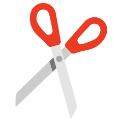
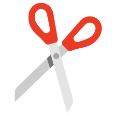

This website was made for Stanford's CS109 class extra credit challenge. The source code and algorithms were all designed by me. The UI/Website design itself was also designed by me, however given that
I had no prior HTML, CSS, or javascript experience, I did use tutorials from
freeCodeCamp.org and
Programming with Mosh.
Image credit below.
Special thanks to the CS109 staff for helping me debug! This challenge was a lot of fun, and I got to learn a little bit of web development too! 😀
Released under CC0 1.0. Spring 2022.
 Source: Wikipedia
Source: Wikipedia
 Source: Emojipedia
Source: Emojipedia
 Source: Emojiterra

Source: Emojipedia
Source: Emojiterra

Source: Emojipedia